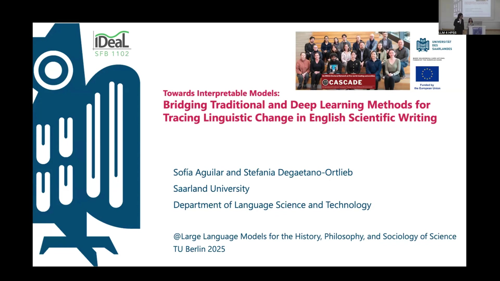
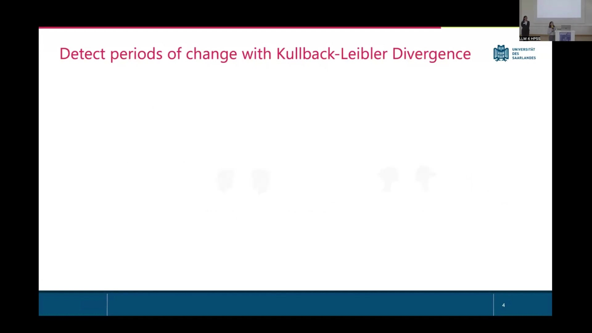
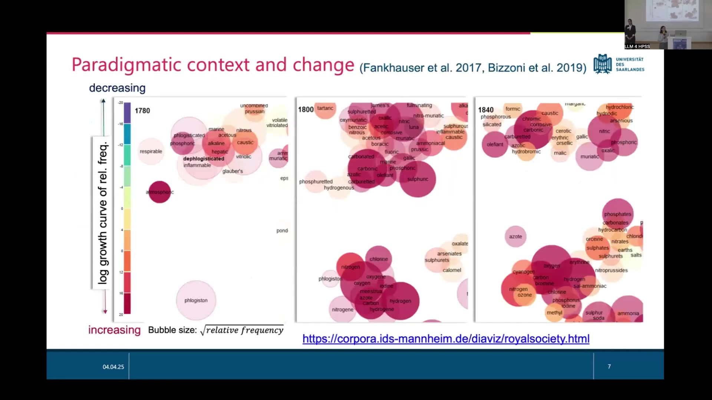
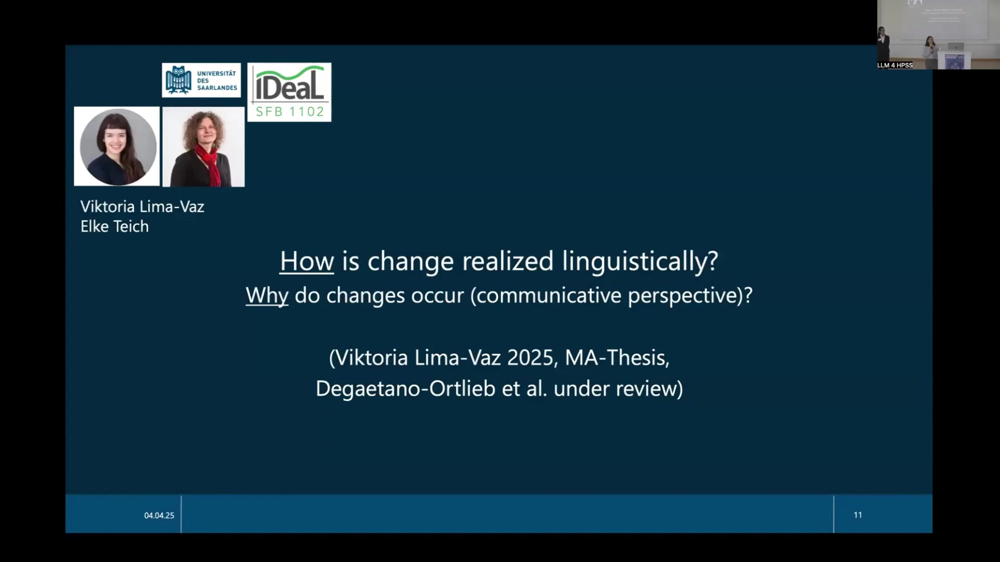
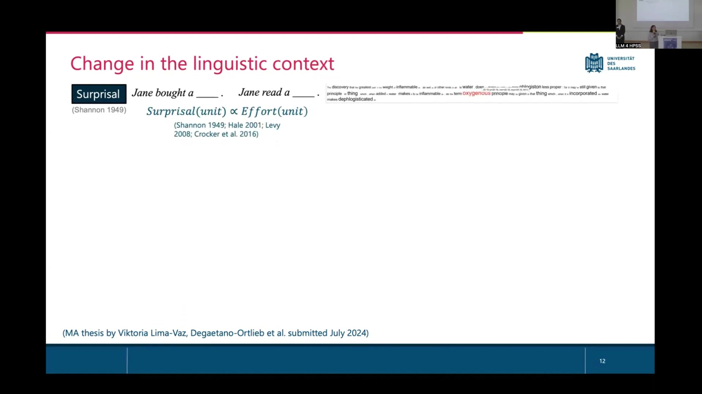
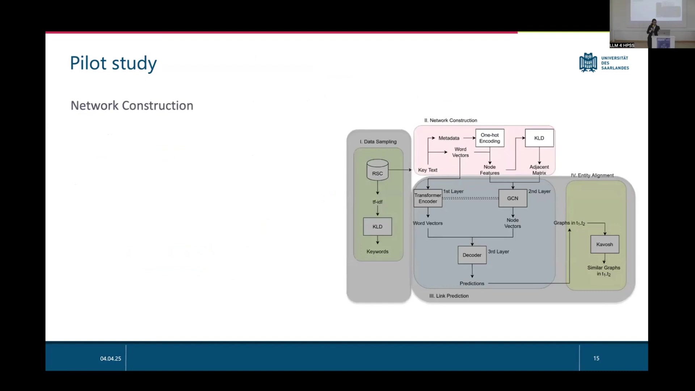

15 Modelling Context and its Interplay in Language Variation and Change: A Pilot Study on the Chemical Revolution
Overview
Researchers are exploring the computational analysis of semantic change, focusing on the intricate modelling of diverse contextual factors and their dynamic interplay. This investigation forms an integral part of the Cascade project, a prestigious Marie Curie doctoral network, with significant contributions from PhD student Sofía Aguilar. Previous work meticulously modelled different context types in isolation; the current objective, however, seeks to synthesise these approaches to illuminate their complex interactions.
The chemical revolution, specifically the profound conceptual shift from the century-old phlogiston theory to Lavoisier’s oxygen theory within the Royal Society Corpus (RSC), serves as a compelling pilot study. Linguists involved in this endeavour examine how language adapts to real-world transformations, drawing upon established register theory and principles of rational communication. The study aims to detect periods of linguistic change, analyse lexical and grammatical shifts, identify influential figures, and ultimately uncover the linguistic mechanisms and communicative drivers underpinning these transformations. A novel framework, employing Graph Convolutional Networks (GCNs), is proposed to model language dynamics by treating context as a central signal, thereby aiming to overcome limitations of existing methods in capturing the nuanced interaction between contextual signals.
15.1 Foundations: Contextual Frameworks and the Chemical Revolution Pilot

Within the Cascade project, a Marie Curie doctoral network, researchers are rigorously investigating the computational analysis of semantic change. PhD student Sofía Aguilar spearheads efforts to model context comprehensively, meticulously examining the interplay between its various dimensions. This work builds upon previous studies that modelled distinct types of context in isolation, now seeking to integrate these approaches for a more holistic understanding of their interactions.
The chemical revolution provides a compelling pilot study for these methodological explorations, drawing extensively upon the Royal Society Corpus (RSC). This pivotal historical period witnessed the significant conceptual shift from the long-standing phlogiston theory to Lavoisier’s oxygen theory—a transformation richly documented at resources such as chemistryworld.com and vividly represented by contemporary art, including the iconic painting of Lavoisier and his wife. The investigation aims to model a spectrum of contextual factors: situational (where), temporal (when), experiential (what), interpersonal (who), textual (how), and causal (why).
From a linguistic standpoint, the core interest lies in how language adapts to such profound worldly changes. Two primary theoretical frameworks guide this inquiry. Firstly, language variation and register theory, as articulated by Halliday (1985) and Biber (1988), posits that situational context directly influences language use. Concurrently, the linguistic system itself offers inherent variation, allowing concepts to be expressed in multiple ways—for instance, the evolution from “…air which was dephlogisticated…” to “…dephlogisticated air…” and ultimately to “…oxygen…”. Secondly, principles of rational communication and information theory, associated with the IDeaL SFB 1102 research centre and drawing on work by Jaeger and Levy (2007) and Plantadosi et al. (2011), suggest that this linguistic variation serves to modulate information content. Such modulation optimises communication for efficiency whilst maintaining cognitive effort at a reasonable level.
15.2 Detecting Temporal Shifts through Kullback-Leibler Divergence

To pinpoint precisely when linguistic transformations occur, investigators employ Kullback-Leibler Divergence (KLD), moving beyond comparisons of arbitrarily predefined periods. This information-theoretic measure, represented as p(unit|context), quantifies the difference in language use—specifically, the probability distributions of linguistic units within a given context—between distinct timeframes. For instance, language from the 1740s exhibits low divergence when compared to the 1780s, indicating relative similarity, whereas a comparison with the 1980s would reveal substantially higher divergence due to profound linguistic evolution.
Researchers Degaetano-Ortlieb and Teich (2018, 2019) refined this into a continuous comparison method. This technique systematically contrasts a “PAST” temporal window (e.g., the 20 years preceding a specific year) with a “FUTURE” window (e.g., the 20 years following it) across a corpus. Plotting KLD values over time (e.g., from 1725 to 1845) reveals periods of accelerated linguistic change. Analysis of lexical units (lemmas) using this method highlights the shifting prominence of terms such as “electricity,” “dephlogisticated,” “experiment,” “nitrous,” “air,” “acid,” “oxide,” “hydrogen,” and “oxygen,” alongside others like “glacier,” “corpuscule,” “urine,” and “current.” Such patterns often signal the emergence or redefinition of concepts. Indeed, a notable period of divergence between 1760 and 1810 precisely coincides with crucial scientific discoveries, including Henry Cavendish’s identification of hydrogen (then “inflammable air”) in 1766 and Joseph Priestley’s discovery of oxygen (as “dephlogisticated air”) in 1774.
Furthermore, this KLD-based approach extends beyond vocabulary to encompass grammatical shifts. By defining the linguistic unit as a Part-of-Speech (POS) trigram, analysts can meticulously track changes in grammatical patterns. Comparisons between KLD analyses of lexis and grammar reveal that periods of significant lexical innovation often correspond with alterations in syntactic structures, suggesting a coupled evolution of vocabulary and grammar.
15.3 Paradigmatic Change and Scientific Influence: Cascade Models

Beyond temporal detection, this investigation delves into paradigmatic context and the dynamics of conceptual change, referencing seminal work by Fankhauser et al. (2017) and Bizzoni et al. (2019). One analytical technique involves plotting logarithmic growth curves of the relative frequency of specific chemical terms over extended periods, such as 1780 to 1840. In these visualisations, the size of bubbles corresponds to the square root of a term’s relative frequency, clearly depicting which terms are increasing or decreasing in usage. Accompanying scatter plots for distinct years—for example, 1780, 1800, and 1840—reveal evolving clusters of related chemical terms, with data often sourced from repositories like corpora.ids-mannheim.de.
To understand precisely who spearheads and propagates these linguistic and conceptual shifts, researchers Yuri Bizzoni, Katrin Menzel, and Elke Teich (associated with IDeaL SFB 1102) employ Cascade models, specifically Hawkes processes (Bizzoni et al. 2021). These models generate heatmaps that elegantly illustrate networks of influence, plotting “influencers” against “influencees”—typically scientists active during the period. The intensity of colour, often shades of blue, signifies the strength of influence. Through such analysis, distinct roles in the dissemination of new theories and terminologies emerge. For instance, in the context of the chemical revolution, Priestley appears as an “Innovator,” Pearson as an “Early Adopter,” and figures like Davy contribute to the “Early Majority” uptake.
15.4 Linguistic Realisation and Communicative Drivers: The Role of Surprisal

The inquiry extends to how linguistic change manifests and the communicative pressures that might drive it, drawing on research by Viktoria Lima-Vaz (MA-Thesis, 2025) and Degaetano-Ortlieb et al. (under review), with valuable contributions from Elke Teich. A key concept in this strand of analysis is “surprisal,” originating from Shannon’s (1949) information theory and further developed by Hale (2001), Levy (2008), and Crocker et al. (2016). Surprisal posits that the cognitive effort required to process a linguistic unit is directly proportional to its unexpectedness or improbability in a given context; for example, the word completing “Jane bought a ____” might have a different surprisal value than one completing “Jane read a ____.”
Applying this to linguistic change, researchers meticulously examine shifts in how concepts are encoded. A single concept might transition through various linguistic forms, such as a clausal construction like “…the oxygen (which) was consumed,” a prepositional phrase like “…the consumption of oxygen…,” and eventually a more concise compound form like “…the oxygen consumption…”. The underlying hypothesis suggests that shorter, more communicatively efficient encodings tend to emerge and gain currency within a speech community. Longitudinal analysis, vividly visualised through graphs plotting surprisal against year, robustly supports this. For instance, comparing the surprisal trajectories of “consumption of oxygen” (prepositional phrase) and “oxygen consumption” (compound) often reveals that as the shorter compound form becomes more established, its average surprisal value decreases, indicating a reduction in cognitive processing effort for the community utilising that form.
15.5 A Novel Framework: Graph Convolutional Networks for Contextual Dynamics

ECR Sofía Aguilar, funded by the European Union through the CASCADE project, proposes a novel framework for modelling context in the analysis of language variation and change. This work stems from the profound understanding that language change is intrinsically linked to shifts in social context, including evolving goals, social structures, and domain-specific conventions. Current methodologies, such as semantic change studies, KLD applications, and static network approaches, effectively track shifts but often fall short in modelling the intricate interactions between various contextual signals. The proposed framework positions context as a central signal for modelling language dynamics, with Graph Convolutional Networks (GCNs) identified as a promising technological direction due to their capacity for powerfully modelling complex relational data.
A pilot application of this framework targets the chemical revolution period (1760s-1820s) and unfolds in four distinct stages:
Data Sampling: This initial stage involves using KLD to identify words distinctive for specific sub-periods within this era, thereby pinpointing relevant lexical items whose KLD contributions are high.
Network Construction: Researchers begin by creating word- and time-aware feature vectors. BERT generates word vectors, whilst one-hot encoding captures temporal and other features. These combine to form a node feature matrix for successive 20-year intervals. KLD then measures the dissimilarity in these node feature vectors across periods, yielding a diachronic series of graphs. To manage complexity, network size is refined using community detection algorithms, such as that proposed by Riolo and Newman (2020).
Link Prediction: This stage aims to model how, when, and by whom specific words are used. Word profiles are augmented with semantic embeddings (e.g., from BERT), contextual metadata (such as author, journal, and period), and grammatical information (including part-of-speech tags and syntactic roles). A Transformer-GCN model then learns patterns from these rich profiles to predict new links within the network. The graph convolution component captures structural relationships, while the transformer’s attention mechanism highlights the most influential contextual features.
Entity Alignment: This final stage facilitates the inspection and interpretation of change. It employs network motifs—small, overrepresented subgraphs that signify meaningful interaction structures. The Kavosh algorithm assists by grouping isomorphic graphs to identify these recurring motifs within the networks, offering profound insights into the patterns of linguistic and conceptual evolution.
15.6 Reflections: Limitations and Future Directions

This research acknowledges several profound questions that delineate its current limitations and chart compelling future directions. A primary concern involves the very nature of computationally tracing conceptual change: can current and future models move beyond capturing mere linguistic drift to apprehend deeper epistemic shifts? Another critical area of inquiry centres on how context truly integrates into the meaning-making processes of language models—specifically, whether metadata functions as external noise or as a core, internalised signal.
Further consideration must be given to defining the fundamental ‘unit’ of language change. Investigators question whether shifts are most effectively observed at the level of individual words, broader concepts, grammatical structures, or larger discourse patterns. The possibility of identifying recurring linguistic pathways for the emergence of new concepts also presents an intriguing avenue: do novel ideas tend to follow predictable linguistic trajectories as they gain acceptance? Finally, the challenge of interpretability in increasingly complex models remains paramount. Ensuring that the explanations generated by these models are genuinely meaningful, rather than merely plausible, is crucial for advancing the field.